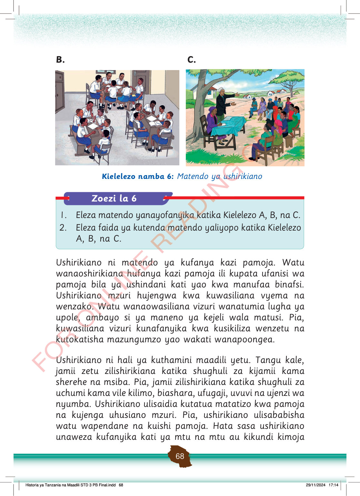

B.
Wanafunzi wamekaa katika vikundi darasani na wanajadili masomo pamoja. Wanashirikiana kusoma na kusaidiana.
C.
Watu wa kijiji wamekusanyika chini ya mti kwa mkutano. Wanasikiliza na kujadiliana pamoja.
Kielelezo namba 6: Matendo ya ushirikiano
Zoezi la 6
1.
Eleza matendo yanayofanyika katika Kielelezo A, B, na C.
2.
Eleza faida ya kutenda matendo yaliyopo katika Kielelezo A, B, na C.
Ushirikiano ni matendo ya kufanya kazi pamoja.
Watu wanaoshirikiana hufanya kazi pamoja ili kupata ufanisi wa pamoja bila ya ushindani kati yao kwa manufaa binafsi.
Ushirikiano mzuri hujengwa kwa kuwasiliana vyema na wenzako.
Watu wanaowasiliana vizuri wanatumia lugha ya upole, ambayo si ya maneno ya kejeli wala matusi.
Pia, kuwasiliana vizuri kunafanyika kwa kusikiliza wenzetu na kutokatisha mazungumzo yao wakati wanapoongea.
Ushirikiano ni hali ya kuthamini maadili yetu.
Tangu kale, jamii zetu zilishirikiana katika shughuli za kijamii kama sherehe na msiba.
Pia, jamii zilishirikiana katika shughuli za uchumi kama vile kilimo, biashara, ufugaji, uvuvi na ujenzi wa nyumba.
Ushirikiano ulisaidia kutatua matatizo kwa pamoja na kujenga uhusiano mzuri.
Pia, ushirikiano ulisababisha watu wapendane na kuishi pamoja.
Hata sasa ushirikiano unaweza kufanyika kati ya mtu na mtu au kikundi kimoja
Historia ya Tanzania na Maadili STD 3 PB Final.indd 68
29/11/2024 17:14